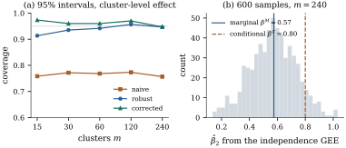

40.4 Generalized estimating equations
Suppose the question is the marginal one and the cluster structure a nuisance. Then a generalized linear mixed model asks for more than is needed: a distribution for the random effects, a conditional distribution for the responses, and an intractable integral. Everything the question needs is in the mean, and Chapter 38 showed that a mean and a variance function suffice to build a usable estimating equation without a likelihood.
Carrying that across to clustered data gives the method of Liang and Zeger (1986), the most widely used in this chapter and the most widely misunderstood. It estimates a marginal coefficient consistently even when the correlation structure it assumes is wrong. It does not estimate a conditional coefficient at all; it produces no likelihood, so most of the model-comparison machinery of the book does not apply; and its robustness to a wrong correlation does not extend to data that go missing for the wrong reasons.
40.4.1. The estimating equation
Clusters
with
Let
and the generalized estimating equation is
In practice
Within this chapter
Remark (Three familiar special
cases). With
Solving Eq. 40.4.3 is Fisher
scoring. Write
in which
40.4.2. What the estimate does and does not have
Let the clusters be independent, let
- (E1)
- (E2)
- (E3) the eigenvalues of
- (E4)
- (E5)
- (E6) with
Then:
(a) Unbiasedness. For every fixed
(b) Consistency and asymptotic normality. With probability tending to one, Eq. 40.4.3 has a root
(c) The sandwich estimator. Let
with hats denoting evaluation at
(d) When the model-based covariance is valid. If the working covariance is correct,
Proof.
(a) At
(b) and (c). Expand
The derivative.
The score.
Estimating
Combining,
- (d) If
Remark (What is proved and what is
assumed). The existence of a consistent root
and the uniform control of the derivative are the two
places where the argument leans on standard machinery
rather than its own steam; both go exactly as for Theorem 34.5.1,
using the concavity-free argument for estimating
equations in Liang and Zeger (1986). Condition (E5) is a
real assumption: moment estimators of
Warning (The mean model must hold for the
whole cluster). Eq. 40.4.1 constrains
Idea. The asymptotics are in
40.4.3. Travel-mode choice
Each of
The four records of a traveller are anything but
independent: exactly one is a
The sandwich is not a device for making standard
errors bigger. Negative within-cluster correlation makes
within-cluster contrasts better determined than
independence would suggest, and cost is such a contrast;
waiting time is confounded with the mode indicators,
which the traveller’s single choice constrains, and is
therefore worse determined. Two further observations.
The Pearson dispersion estimate is
import numpy as np
def expit(z):
return 1.0 / (1.0 + np.exp(-z))
def working_correlation(kind, r, p, scale_fixed=False):
"""Moment estimate of the working correlation from the Pearson residuals r (m by n)."""
m, n = r.shape
phi = 1.0 if scale_fixed else np.sum(r**2) / (m * n - p)
if kind == "independence":
return np.eye(n), 0.0, phi
if kind == "exchangeable":
off = (np.sum(r.sum(1) ** 2) - np.sum(r**2)) / 2
a = off / (phi * (m * n * (n - 1) / 2 - p))
return np.eye(n) + a * (1 - np.eye(n)), a, phi
if kind == "ar1":
a = np.sum(r[:, :-1] * r[:, 1:]) / (phi * (m * (n - 1) - p))
lag = np.abs(np.arange(n)[:, None] - np.arange(n))
return a**lag, a, phi
if kind == "unstructured":
R = (r.T @ r) / (phi * m)
R = R / np.sqrt(np.outer(np.diag(R), np.diag(R)))
return R, np.nan, phi
raise ValueError(kind)
def gee(y, X, kind="independence", family="binomial", scale_fixed=False, maxit=200):
"""Solve sum_i D_i' V_i^{-1} (y_i - mu_i) = 0 for balanced clusters y (m, n), X (m, n, p).
With S_i = diag(mu'_ij / sqrt(V(mu_ij))) and Pearson residuals r_i, the Fisher-scoring
step is beta += (sum_i X_i'S_i R^{-1} S_i X_i)^{-1} sum_i X_i'S_i R^{-1} r_i."""
m, n, p = X.shape
beta, R, alpha, phi = np.zeros(p), np.eye(n), 0.0, 1.0
for _ in range(maxit):
eta = X @ beta
if family == "binomial":
mu = expit(eta)
dmu, V = mu * (1 - mu), mu * (1 - mu)
else: # log link, V(mu) = mu^2 (gamma)
mu = np.exp(eta)
dmu, V = mu, mu**2
r = (y - mu) / np.sqrt(V)
R, alpha, phi = working_correlation(kind, r, p, scale_fixed)
Rinv = np.linalg.inv(R)
S = dmu / np.sqrt(V)
SX = S[..., None] * X # (m, n, p)
A = np.einsum("mjp,jk,mkq->pq", SX, Rinv, SX)
g = np.einsum("mjp,jk,mk->p", SX, Rinv, r)
step = np.linalg.solve(A, g)
beta = beta + step
if np.max(np.abs(step)) < 1e-11:
break
u = np.einsum("mjp,jk,mk->mp", SX, Rinv, r) # cluster contributions
Ainv = np.linalg.inv(A)
robust = Ainv @ (u.T @ u) @ Ainv # the sandwich covariance
naive = phi * Ainv # the model-based covariance
return dict(beta=beta, naive=naive, robust=robust, alpha=alpha, phi=phi, R=R,
A=A, Ainv=Ainv, S=S, r=r, Rinv=Rinv, X=X)import pandas as pd
import statsmodels.api as sm
d = sm.datasets.modechoice.load_pandas().data.sort_values(["individual", "mode"])
m, n = d["individual"].nunique(), 4 # 210 travellers, 4 modes each
y = d["choice"].to_numpy().reshape(m, n)
D = pd.get_dummies(d["mode"].astype(int), drop_first=True).to_numpy(dtype=float)
cols = [np.ones(m * n)] + [D[:, j] for j in range(3)] + [d["ttme"] / 10, d["gc"] / 10]
X = np.stack([np.asarray(c, dtype=float).reshape(m, n) for c in cols], axis=2)
# a Bernoulli response carries no information about a dispersion parameter, so phi = 1
fit = gee(y, X, "independence", scale_fixed=True)
se_naive, se_robust = np.sqrt(np.diag(fit["naive"])), np.sqrt(np.diag(fit["robust"]))
names = ["intercept", "train", "bus", "car", "ttme/10", "gc/10"]
for k, name in enumerate(names):
print(f"{name:10s} {fit['beta'][k]:8.4f} naive {se_naive[k]:.4f} robust {se_robust[k]:.4f}")
print("exchangeable alpha:", round(gee(y, X, 'exchangeable', scale_fixed=True)['alpha'], 4))40.4.4. Small samples, and a simulation
The sandwich Eq. 40.4.6 replaces
- Bias-corrected residuals. Mancl and
DeRouen (2001) replace
- A
Generate clusters of
The three intervals behave quite differently. The
model-based interval covers

40.4.5. What GEE does not give
No likelihood. Eq. 40.4.3 is not the derivative of anything in general, so there is no deviance, no likelihood ratio test, and no AIC or BIC. Nested mean models are compared by Wald tests built on Eq. 40.4.6 or by score-type tests built on Eq. 40.4.3 under the null; selection uses QIC, the quasi-likelihood analogue of AIC (Section 40.5). Reporting a “deviance” from GEE output is a category error.
No random effects and no distribution. There is nothing to predict, so if the object of interest is a cluster — which hospital is doing badly, which firm is unusually profitable — GEE has no answer and Proposition 40.2.3 has no analogue; and because only the mean is modelled, the fit cannot be simulated from, cannot give a prediction interval, and cannot be checked by an envelope or posterior predictive method.
Few clusters. Everything above is asymptotic
in
40.4.6. Missing data
The robustness of Eq. 40.4.3 has a sharp
limit. If some responses are not observed, write
If the data are missing completely at
random,
That asymmetry is the strongest practical argument for the mixed-model route in longitudinal studies with dropout, and it is not widely enough known. The repair is to weight each cluster’s contribution by the inverse of its estimated probability of being observed — the weighted GEE of Robins, Rotnitzky and Zhao (1995), which trades the assumption about the correlation for one about the missingness model. Chapter 41 develops the mechanisms, the ignorability theorem and the alternatives.
40.4.7. Exercises
A. Check your understanding
Show from Eq. 40.4.3 that with
A trial randomizes clinics to a new protocol and measures a binary outcome on patients within clinics. The investigators want to report “the effect of the protocol on a patient’s odds of recovery”. Which method should they use, and what would a GEE analysis report instead?
B. Practice
Take
Solution. The estimating equation
is
Let
Solution. Unbiasedness is immediate
from
C. Going deeper
Show that if